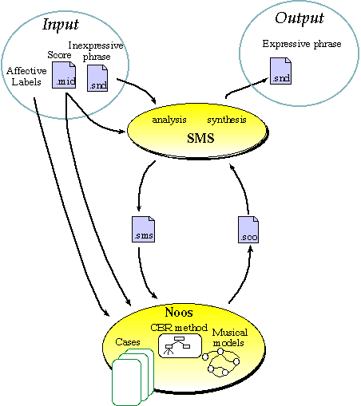
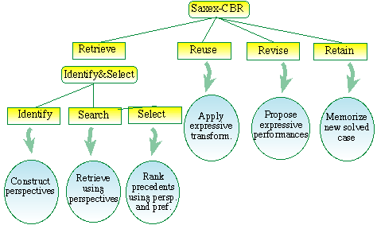
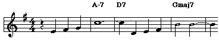
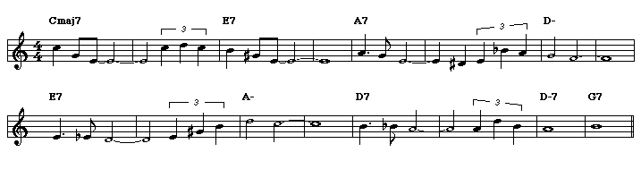

A Case-Based Reasoning system
for generating expressive performances
Josep Lluís Arcos
We have developed Saxex, a case-based reasoning system for generating
expressive performances of melodies based on examples of human performances.
Case-based Reasoning (CBR) is a recent approach to problem solving and
learning where new problems are solved using similar previously
solved problems. The two basic mechanisms used by CBR are (i) the
retrieval of solved problems (also called precedents or cases) using some
similarity criteria and (ii) the adaptation of the solutions applied in the
precedents to the new problem. Case-based reasoning techniques are
appropriate on problems where many examples of solved problems can be
obtained---like in our case where multiple examples can be easily obtained
from recordings of human performances.
Sound analysis and synthesis techniques based on spectrum models like SMS
(Spectral Modeling Synthesis) are useful for the extraction of high level
parameters from real sounds, their transformation and the synthesis of a
modified version of the original. Saxex uses SMS in order to extract basic
information related to several expressiveness parameters such as dynamics,
rubato, vibrato, and articulation. The SMS synthesis procedure allows
Saxex the generation of new expressive interpretations (new sound
files).
Saxex incorporates background musical knowledge based on Narmour's
implication/realization model and Lerdahl and Jackendoff's generative
theory of tonal music (GTTM). These theories of musical perception and
musical understanding are the basis of the computational model of musical
knowledge of the system.
Saxex is implemented in Noos, a
reflective object-centered representation language designed to support
knowledge modeling of problem solving and learning.
We have started to study the issue of musical expression in the context of
tenor saxophone interpretations. We have done several recordings of a
tenor sax performer playing several Jazz standard ballads with different
degrees of expressiveness, including an (almost) inexpressive
interpretation of each piece. These recordings are analyzed using the SMS
spectral modeling techniques in order to extract basic information related
to the expressive parameters. The set of extracted parameters together
with the scores of the pieces constitute the set of cases of the case-based
system. From this set of cases and using similarity criteria based on the
background musical knowledge, the system infers a set of possible
expressive transformations for a given piece. Finally, using the SMS
synthesis procedure and the set of inferred transformations, Saxex
generates new expressive interpretations of the same jazz ballads as well
as of other similar melodies.
The block diagram of the Saxex components is the following:

The Case-based Reasoner
The problem solving method developed follows the subtask decomposition of
CBR methods: retrieve, adapt, and incorporate (see figure
below).
- Retrieve: The goal of the retrieve task is to choose the set
of notes (cases) most similars to the current problem. This task is
decomposed in three subtasks:
- Identify: The goal of this task is to build retrieval
patterns using two alternative criteria. The first criterion uses
the Narmour's implication/realization structures. The second used criterion
is the metrical importance (following GTTM) of the notes.
- Search: The goal of this second task is to search cases in the
case memory using Noos
retrieval methods and previously constructed patterns.
- Select: The goal of the select task is to rank the retrieved
cases using Noos
preference methods. The preference methods use criteria such as similarity
in duration of notes, harmonic stability, or melodic directions.
- Adapt: the goal of the adapt task is to choose a set of
expressive transformations to be applied in the current problem from the
set of more similar cases. The first criterion used is to copy from the
most similar case. When there are several cases considered equally
similar, the mayority rule is used. Finally, when previous criteria not
are sufficient all the cases are considered equally possible alternatives
and one of them is selected randomly.
- Incorporate: the incorporation of the new solved problem to
the memory of cases is performed automatically in Noos. All solved
problems will be available for the reasoning process in future problems.

One small Example
Autumn Leaves

Inexpressive Phrase
 |
Saxex |
Expressive Phrase
|
Previous work on the analysis and synthesis of musical expression has
addressed the study of parameters such as rhythm and vibrato, however, to
the best of our knowledge, the only previous work addressing the issue of
learning to generate expressive performances based on examples is that of
Widmer, who uses explanation-based techniques to learn rules for dynamics
and rubato in the context of a MIDI electronic piano. In our approach we
deal with additional expressive parameters in the context of a expressively
richer instrument. Furthermore, to the best of our knowledge, this is the
first attempt to deal with this problem using case-based techniques. The
results obtained are comparable to a human performance specially for
dynamics, rubato and vibrato, however the articulation needs further work.
A complete example
All of Me

Inexpressive Phrase
|
Saxex |
Expressive Phrases
(Joyful)
(Sad)
|
|

music projects
© Josep Lluís Arcos
IIIA
(CSIC)
http://www.iiia.csic.es
28 Jan 1997
|